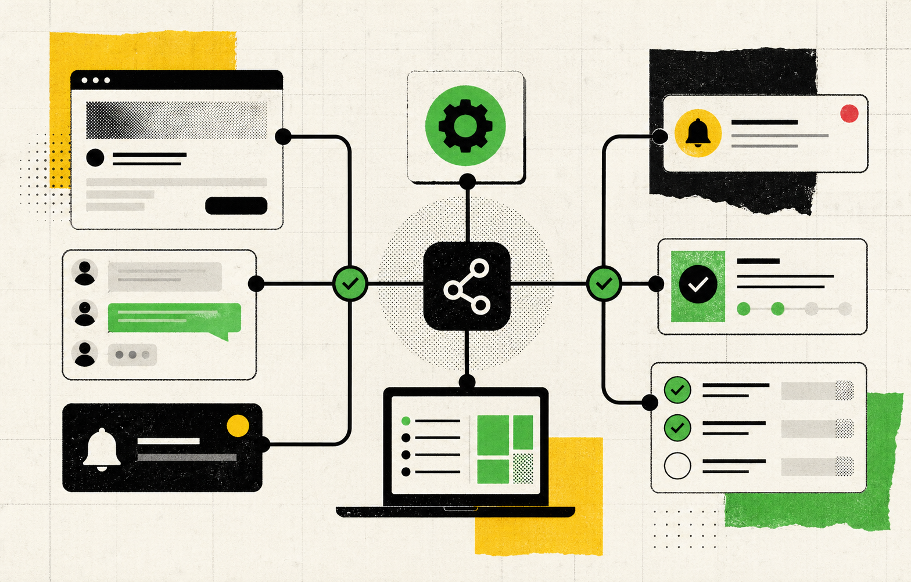

SOLUTIONS
能直接上场的五件事
网站搭建与优化
首页、方案页、FAQ、联系页，按成交路径重排。
内容体系与 SEO
把文章写成筛选器，让高意向的人更快找到你。
OpenClaw 集成
把 Agent 能力接入实际表单、消息与任务。
飞书协同自动化
线索分配、提醒、跟进、复盘，减少手动搬运。
运营顾问与陪跑
每周看数据、看卡点，只迭代影响收入的环节。
CASES
匿名行业复盘，不包装成真实客户故事

飞书 + Agent 运营中台
把“有人问、没人跟”的现场，改成可追踪的任务流。
入口表单、群消息、客户问题、负责人和下一步动作统一进入飞书。Agent 负责归类、生成摘要和提醒，人只处理判断与成交。
金融合规知识助手
把制度、问答和审批口径整理成可检索知识库，减少重复问答与口径漂移。
银行级客服质检
通话与文本先由 Agent 预筛，再把风险片段、评分理由和改进建议交给主管复核。
制造业销售线索
官网询盘、展会名片、旧客户跟进统一入池，自动补齐标签、提醒销售推进。
内容矩阵增长
从选题、文章、短内容到咨询入口，形成一套可复用的内容生产和承接流程。
FLOW
先跑通，再放大
CONTACT
把页面、表单或流程发来，先看哪里最值得改。
不用先写长需求。发来链接、截图和你现在最卡的一步，我们给你一个可执行的改造顺序。
发给 BUMA